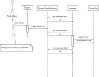
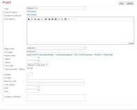
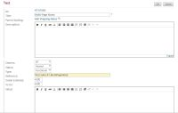
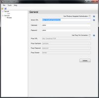
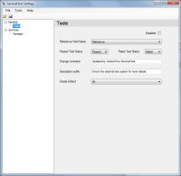
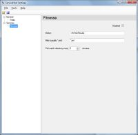

Description
The VersionOne FitNesse Integration (V1Fit) imports FitNesse test results into VersionOne, making the latest test results more visible across the an organization. The results can be recorded at two different levels of granularity—project and test. The aggregate results for a suite of tests in FitNesse can be linked to a project in VersionOne, so that everyone can see the health of their project from a testing standpoint from within VersionOne. The results of an individual FitNesse acceptance test can be linked to a Test in VersionOne, so that development team members receive quick feedback on which tests are passing and failing.
The integration point with FitNesse is the xml formatted results file. When configuring the integration, teams must automate a process that runs the FitNesse tests, transforms the results into the FitNesse xml format, and stores the results in an output directory. V1Fit watches the output directory for new files and imports the results into VersionOne.
Once V1Fit has been installed, VersionOne users update the reference field for test suites or tests with the path to the corresponding suite or test page in FitNesse. A single VersionOne test suite can be assigned to one or more VersionOne projects. The Test Run Trend report shows the aggregated test results for the test suite which was assigned to the project at the time of the test run. For individual tests, each test in VersionOne should have its own test page in FitNesse. V1Fit considers a test passing if all of the assertions for that test are passing. If a test fails on a story or defect that is already closed, V1Fit can be configured to create a defect in the current iteration, so the team is notified of the failing test.
The following sequence diagram illustrates how V1Fit interacts with FitNesse and VersionOne.

{kind=link}
System Requirements
- VersionOne: 7.1 or above, including Team Edition
- Integration Server:
- Operating System — Windows 2003, 2008
- Framework—Microsoft .Net 2.0 SP1
- FitNesse — Release v20060719 — v20090513
- FitServer — Version 1.8.3183.38423
Download
The latest version of V1Fit is available from the VersionOne Community site
Installation
These installation instructions assume that FitNesse is already installed, configured, and working properly.
- Determine Install Location
V1Fit can be installed on any server with network access to both VersionOne and FitNesse. Exact placement should be determined by your internal software management requirements. The integration server must meet the System Requirements stated above.
- Extract Files
Download V1Fit using the link above and extract it into a folder of your choice.
- Configure
- Start integration
Open up the command prompt, navigate to your installation folder, and run the following command:VersionOne.ServiceHost.exe
If you have configured your system properly, you should see several [Info] messages followed by a [Startup] message.
- Test the integration
To ensure the integration is working, drop a FitNesse results xml file into your watch folder.-
- If the file contains no test for the TestSuite you defined in VersionOne, you should see the following messages:
[Info] Starting Processing File: C:\PathToWatchFolder\WatchFolder\Results.xml [Info] Finished Processing File: C:\PathToWatchFolder\WatchFolder\Results.xml
- If the file contains results for the TestSuite you defined in VersionOne, you should see results similar to the following:
[Info] Starting Processing File: C:\PathToWatchFolder\WatchFolder\Results2.xml [Info] Suite: TestRun.Date = 1/1/2007 8:13:00 AM TestRun.Failed = 0 TestRun.Elapsed = 0 TestRun.Description = Fit Test Suite TestRun.Passed = 1 TestRun.NotRun = 0 TestRun.Name = SuiteAllTests.SuiteProjectA TestRun.TestSuite = TestSuite:1069 [Info] Finished Processing File: C:\PathToWatchFolder\WatchFolder\Results2.xml
V1Fit only processes a file once, so changing the contents of a file after it has been processed will have no effect. If you want to reprocess a file, save it with a new name.
- If the file contains no test for the TestSuite you defined in VersionOne, you should see the following messages:
- Shut down the service host by pressing “Q” in the console window.
-
- Install as a Windows Service
Run the following command from the console window:VersionOne.ServiceHost.exe --install
This command installs the service so it will will run under the account NT AUTHORITY\Local Service. Local Service must be given access privileges to the directory where the V1ClearQuest executable was installed so it can store its state and write to log files. Follow the steps below to change the security on the installation directory:
- Right click the installation folder from Windows Explorer.
- Select "properties".
- Select the "Security" tab.
- Click the "Add" button.
- Enter "Local Service" and click "OK".
- Click the "Allow" checkbox for the "Full Control" row .
- Click "OK" to save the changes.
Configuration
Setup the FitNesse TestRunner
FitNesse is a wiki that provides a powerful interface for specifying and running acceptance tests, but it also includes the capability to run tests from the command line. Although FitServer implementations vary, they generally include a Test Runner executable that can be run from the command line to execute a suite of FitNesse tests.
The steps below show the commands that could be used to set up a test runner for a FitNesse instance that is using .Net Fit 1.1 as its FitServer. They are intended as a process guide. The exact commands and their parameters are dependent on your FitServer implementation and environmental configuration.
- Use TestRunner.exe to run the tests and store the results in a text file.
TestRunner -results Results.txt localhost 8080 SuiteAllTests *.dll - Use fitnesse.runner.FormattingOption to transform your tests into XML.
java fitnesse.runner.FormattingOption Results.txt xml Results.xml localhost 8080 SuiteAllTestsThe FormattingOption class is part of the java FitServer implementation and may not have been ported to your FitServer implementation.
- Automate test runs.
How you automate the test runs should be driven by the requirements of the development team. Some teams run them at regularly scheduled intervals, such as nightly. Other teams run them after every successful build. Teams with a large number of tests may do a combination of both.Configure VersionOne
If you are using Team Edition, you need to manually create the Test Suite. Instructions for doing this are available on the VersionOne Community Site. - Add a TestSuite in VersionOne
Navigate to the page Administration > Projects > Test Suites in VersionOne. Add a test suite and give it a Reference to one of your existing FitNesse suites.
- Assign the VersionOne TestSute to a Project
Once the TestSuite is created, it must be assigned to a Project. To accomplish this, edit the VersionOne Project details.
 - Set the Reference Field on Test that are automated using FitNesse
Finally, you need to relate a VersionOne Test to a Test defined in FitNesse. When processing FitNesse TestSuites, V1Fit concatenates the <rootpath> and <relativepagename> values from all tests in the results file and then aggregates the results that meet the reference. Therefore each VersionOne Test must reference the fully qualified FitNesse test.

{kind=link}
{kind=link}
{kind=link}
Configure the Integration
To configure V1Fit you need to run the ServiceHost configuration tool
ServiceHostConfigTool.exe
The following section describes how to configure your FitNesse integration using the use the configuration tool
- Specify your VersionOne connection details on the General

The following table describes the fields on this tabField Description Server URL This is the URL to your VersionOne server Username VersionOne user that will create defects Password Password for the specified user Use Windows Integrated Authentication Check this box if you VersionOne server is configured to use Windows Integrated Authentication When using the integrated authentication, V1Fit will authenticate to VersionOne using the Windows domain user under which the executable is running if both the username and password parameters are blank. If the username and password is entered, you must specify the windows domain account in the form "User@FullyQualifiedDomainName". If you are unsure what the fully qualified domain name is, see the Domain name shown on the 'Computer Name' tab in the My Computer...Properties dialog. If there's a proxy between this machine and the VersionOne instance, you'll also need to configure the following settings:
Field Description Use Proxy For Connection Determines if the integration tries to connect through a Proxy Proxy URL This is the URL to your Proxy Server Proxy Username The username that will get you past this proxy Proxy Password The password for the Proxy Username Proxy Domain Name of Proxy Domain - Once the VersionOne parameters are entered, press Verify button to continue.
- Specify how to update Test in VersionOne on the Tests tab.

The following table describes the fields on this tabField Description Disabled Check this box to disable ChangeSet creation in VersionOne. Reference Field Name VersionOne Field name to search for FitNesse test identifier. It's recommended that you use the Reference field; however if you are already using this field for another purpose, you may choose another text field, including custom fields. Test Passed Status Value to set when a FitNesse test passes Test Failed Status Value to set when a FitNesse test fails Change Comment Comment to use when setting values on VersionOne tests Description Suffix If you are creating Defects, this text will appear in the description field Create Defect Indicates whether the TestWriterService should create defects when automated tests fail for closed tests in VersionOne. Valid values are:
* All: The integration will create a VersionOne Defect for any closed test in the project when the FitNesse test fails
* Current Iteration: The integration will only create VersionOne Defects for closed tests within the current iteration when the FitNesse test fails
* None: The integration never create VersionOne defects - Specify your FitNesse details on the Fitnesse tab.

The following table describes the fields on this tabField Description Disabled Check this box if you want to disable polling FitNesse for ChangeSets. Watch The directory to poll for FIT test results files. Filter The file filter to use when polling for FIT test results files; it may contain any valid search pattern (i.e. *.xml) Poll Interval Determines how frequently the integration polls the Watch directory looking for new files. When running V1Fit as a service, the account used to run the service (i.e. Log On As setting) must have the appropriate rights to read the Watch directory - Save your changes and exit the program
{kind=link}
{kind=link}
{kind=link}
Technical Details
VersionOne.ServiceHost.exe.config
VersionOne.ServiceHost.exe.config is the file that controls the behavior of VersionOne.ServiceHost.exe. Values in this file are set by the configuration tool (ServiceHostConfigTool.exe). This section is provided for informational use only. Users are discouraged from editing this file directly.
The FitReaderService watches for new result files, interprets FIT test results, and publishes the results to the TestWriterService. FitReaderService processes XML files in the schema generated by fitnesse.runner.FormattingOption. The following table describes the elements nested under FitReaderService.
| Element Name | Description |
|---|---|
| Watch | The directory to poll for FIT test results files. The account the service is running as (i.e. Log On As setting) must have read rights to the directory configured in the Watch element. |
| Filter | The file filter to use when polling for FIT test results files; it may contain any valid search pattern compatible with Directory.GetFiles() |
The TestWriterService element controls how Tests are updated in VersionOne. The following table describes the elements nested under TestWriterService.
| Element Name | Description |
|---|---|
| ApplicationUrl | The URL for your VersionOne application |
| Username | The VersionOne account username, if using native VersionOne security. If using Windows Integrated Security, leave empty. |
| Password | The VersionOne account password, if using native VersionOne security. If using Windows Integrated Security, leave empty. |
| APIVersion | The minimum application version required for this hosted service. |
| IntegratedAuth | False if using VersionOne native security, True if using Windows Integrated Security. If VersionOne is configured to use Windows Integrated Security, the account the service is running as must be a configured VersionOne user with a project role of Team Member or higher. Also, Username and Password should be empty if IntegratedAuth is true. |
| PassedOid | The TestStatus asset Oid in VersionOne that indicates test a test succeeded |
| FailedOid | The TestStatus asset Oid in VersionOne that indicates that a test failed |
| TestReferenceAttribute | The cross-reference used to associate tests in VersionOne to test in the external test system ('Number' is the default, 'Reference' another option) |
| ChangeComment | The change comment put into history for any modifications the service makes in VersionOne |
| DescriptionSuffix | A suffix for the description of any defects that the service creates; Embedded Rich Text (HTML) is valid in this suffix |
| CreateDefect | Indicates whether the TestWriterService should create defects when automated tests fail for closed tests in VersionOne. Valid values are:
|
The FitReaderServiceTimer element triggers the FitReaderService every N milliseconds. The following table describes the elements nested under FitReaderServiceTimer.
| Element Name | Description |
|---|---|
| Interval | Number of milliseconds to wait between polls to the FitNesse system |
| PublishClass | Do Not Change |
Example Fitnesse file
The xml content below can be saved to a file and used for testing purposes.
<?xml version="1.0"?>
<testResults>
<host>localhost:8080</host>
<rootPath>SuiteAllTests</rootPath>
<result>
<relativePageName>SuiteProjectA.TestOne</relativePageName>
<content></content>
<counts>
<right>1</right>
<wrong>0</wrong>
<ignores>0</ignores>
<exceptions>0</exceptions>
</counts>
</result>
<finalCounts>
<right>1</right>
<wrong>0</wrong>
<ignores>0</ignores>
<exceptions>0</exceptions>
</finalCounts>
</testResults>